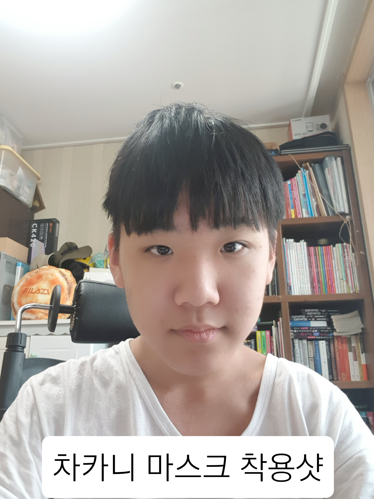
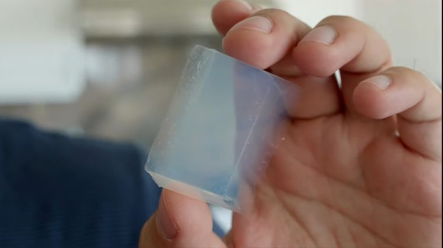

공기 마스크?

제작 과정
공기 마스크는 공기 압축 기계로 5번 가공하여 만든 "공기 필터"를 이용한 마스크입니다.
장점
- 편안함, 차카니 마스크는 공기로 이루어진 마스크로 그 어떤 마스크보다 통기성이 좋고, 가볍습니다.
- 투명함, 불투명한 일반적인 마스크와 다르게 공기로 이루어졌기에 반투명한 색으로 되어있습니다.
- 안전성, 공기의 입자가 비말 전파, 미세먼지, 황사를 막아줍니다. 일반적인 마스크로 따지자면 KF84의 성능을 갖고있습니다.
기계의 원리
먼저 내부의 엔진이 가동되며 순간적으로 주변의 공기를 빨아들입니다. 그 다음 공기를 압축합니다.
내부의 다른 물질을 빼냅니다. 그렇게 속이 비어있는 부드러운 젤리 형태의 물질이 만들어집니다.
그 젤리 속에 공기를 주입합니다. 이 과정을 5번 반복하면 공기가 딱딱한 고체 형태로 변하게 됩니다.

위 과정을 한 번 거친 물질이 에어로겔입니다. 에어로겔은 98% 가량이 공기로 이루어진 고체입니다.
에어로겔을 여러번 압축했고 결론적으로 우린 반투명하고 얇은 막을 얻게되었습니다.
이 물질이 바로 에어리틱(Aeritic)입니다.
에어리틱을 이용하여 필터를 만들고, 마스크를 제작한 것이죠.
가격(한 장)
10000원 입니다.
남은 수량 : 0개
구매하러 가려면 클릭